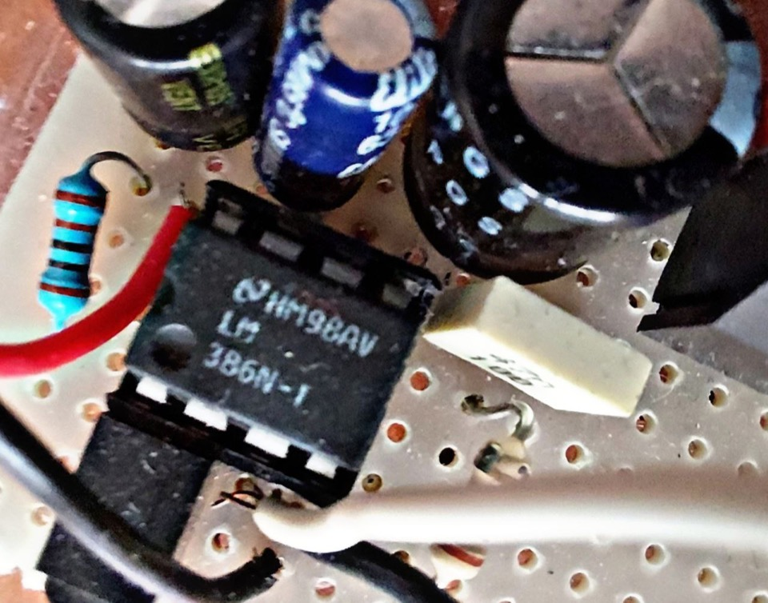

Trace an audio amplifier from input to speaker
Build a small audio stage and use DC and AC measurements to distinguish a missing source, clipping and a weak speaker signal.
An LM386N-1 in an eight-pin package, breadboard, isolated current-limited 5 V DC supply, 8 Ω speaker rated 0.5 W or more, 10 kΩ potentiometer, 220 µF and 10 µF output capacitors, 100 nF and 100 µF supply bypass capacitors, and a 10 Ω resistor with a 47–50 nF capacitor for the output stability network. For measurements use a multimeter, oscilloscope and signal generator. For a first audible test, use a low-volume, battery-powered audio source with a proper mono lead.
Follow the signal from source to speaker

Photo by Samba pa ti. Original photo · Public domain.


Photo by Radarvector, resized. Original photo · CC BY-SA 4.0.


Photo by Socrate28, resized with a label added. Original photo · CC BY-SA 4.0.

Build the gain-of-20 circuit in Figure 9-1. Bridge the centre gap of the breadboard with the IC. Connect 2 and 4 to 0 V and 6 to 5 V. Wire the outer lugs of the 10 kΩ volume control to the source signal and 0 V, and its wiper to 3. Leave 1, 7 and 8 open in this basic build. Place both supply bypass capacitors between 5 V and 0 V close to the chip. Place the series 47–50 nF and 10 Ω network between 5 and 0 V. Put the 220 µF output capacitor between 5 and the speaker, with its positive side at 5. The speaker’s other terminal goes to 0 V. Set the volume low before switching on. TI datasheet and full schematic.
Watch on YouTube · Locate the source, volume control, chip and speaker in the build. Use the TI gain-of-20 circuit above for the values and connections in this lab. Build a simple LM386 audio amplifier · Afrotechmods.
Collect a DC baseline and then an AC trace
With power disconnected, check for accidental shorting of the supply and check the speaker wiring. Connect an isolated 5 V supply, set a 100 mA current limit for this low-signal exercise and check that the supply is operating in voltage mode. If it hits the limit at idle, disconnect and inspect wiring before continuing.
With the source at zero, measure pin 6, pin 5 and the speaker terminal on the far side of the capacitor, all relative to 0 V. With power off, clip the scope and generator ground to the circuit’s 0 V. Never clip their grounds to pin 5 or an unknown output.
Apply a 400 Hz sine wave. Measure and adjust the signal at pin 3 to approximately 25 mV peak-to-peak, with zero DC offset from the generator. Compare the AC swing at pin 5 with the swing across the speaker. Keep the input small. Increase it only briefly to recognise clipping, then return to the baseline.
| Test point | Illustrative result | Why it matters |
|---|---|---|
| Pin 6 | 5.0 V DC | Actual supply at the chip under load |
| Pin 3 | 25 mV peak-to-peak at 400 Hz | Signal delivered by the source and volume control |
| Pin 5 | About half the supply at idle, with roughly 0.50 V peak-to-peak when driven | The chip biases its output and adds the audio swing |
| Speaker terminal after the capacitor | Near 0 V DC, with AC swing close to pin 5 at 400 Hz | The capacitor blocks steady DC and passes most of this signal |
Estimate gain from the measured AC amplitudes at pins 3 and 5. Use the same units and measurement type on both channels. If your meter gives only AC volts, check its 400 Hz bandwidth before trusting a small reading. For a frequency comparison hold the amplitude at pin 3 constant and compare the speaker waveform at 100 Hz and 400 Hz. These figures are an example. Speaker impedance and actual gain vary. UEEEC0067 amplifier troubleshooting skills.
Troubleshoot two quiet amplifiers
When you have a working baseline, switch off and lift the input jumper. On the next run, the signal is absent at pin 3, though pin 5 still has its DC bias. Restore the input. For a second comparison switch off and fit 10 µF in place of the output capacitor, keeping the polarity. At 400 Hz compare pin 5 and the speaker again. The speaker’s AC swing falls much more than pin 5’s signal. Approximate corner frequency is 90 Hz with 220 µF and 2 kHz with 10 µF, using an 8 Ω resistive approximation. A real speaker changes impedance with frequency.
Both amplifiers sound quiet. Which trace changes your next step?
With little AC already at pin 3, follow the source and volume control. With normal AC at pin 5 and much less after the capacitor, inspect the coupling part and load. If the wave is squared at pin 5, reduce the input and see if the clean sine returns before treating it as a speaker fault.
Refit 220 µF, retest using the original source level and save both waveforms plus the idle DC readings. On a working donor speaker or radio, draw the matching path from source selection to the speaker. Find the actual amplifier part number first. Some devices use bridge outputs that require different probing.